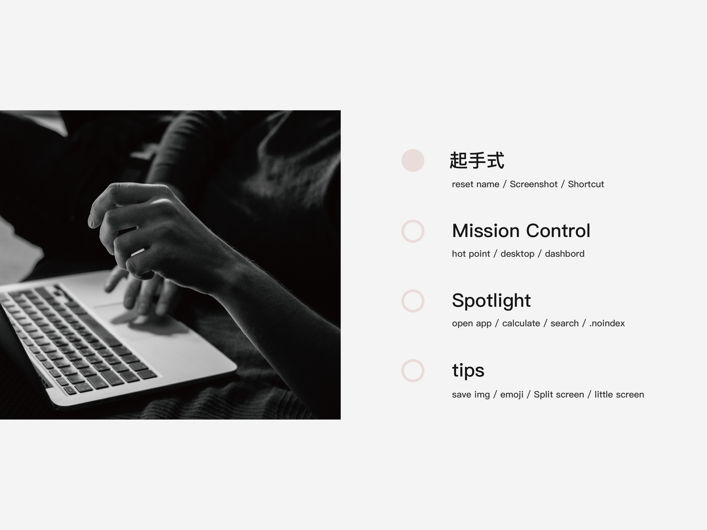
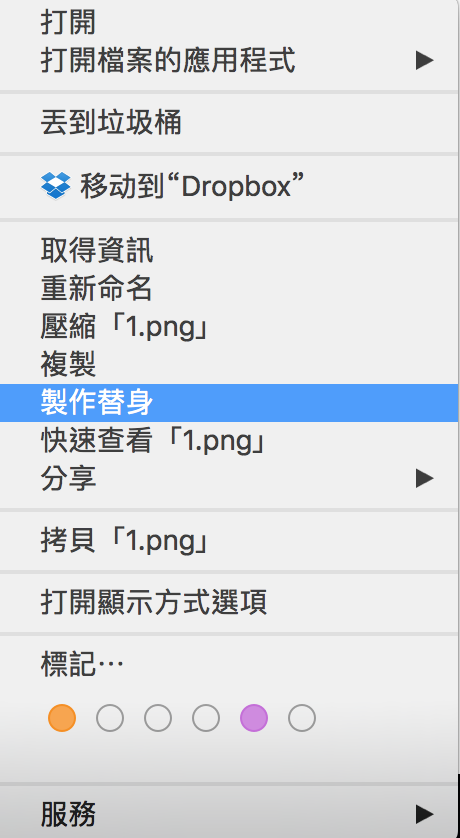
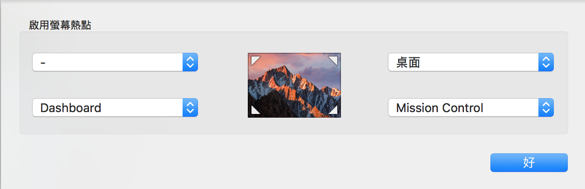
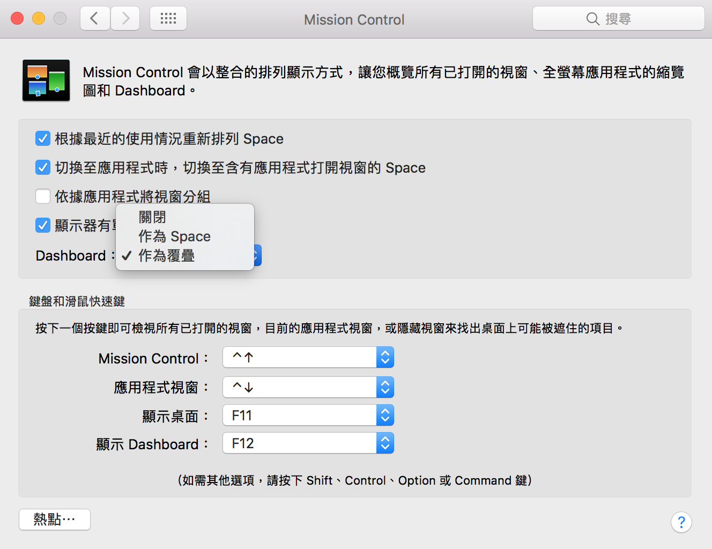
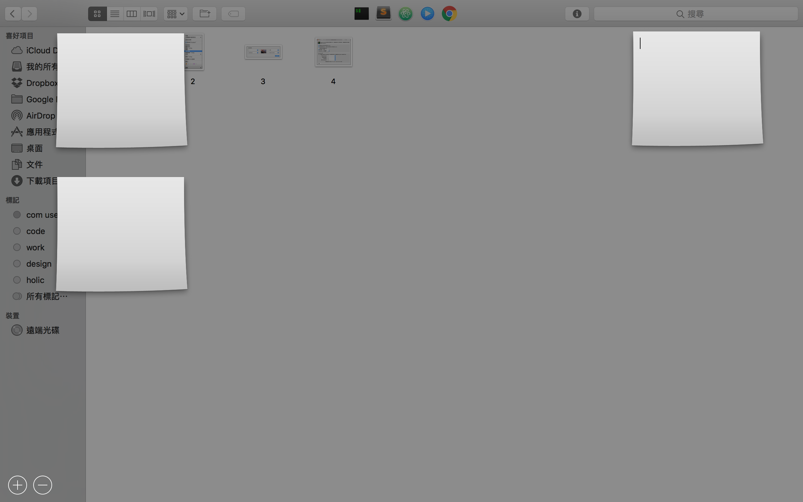
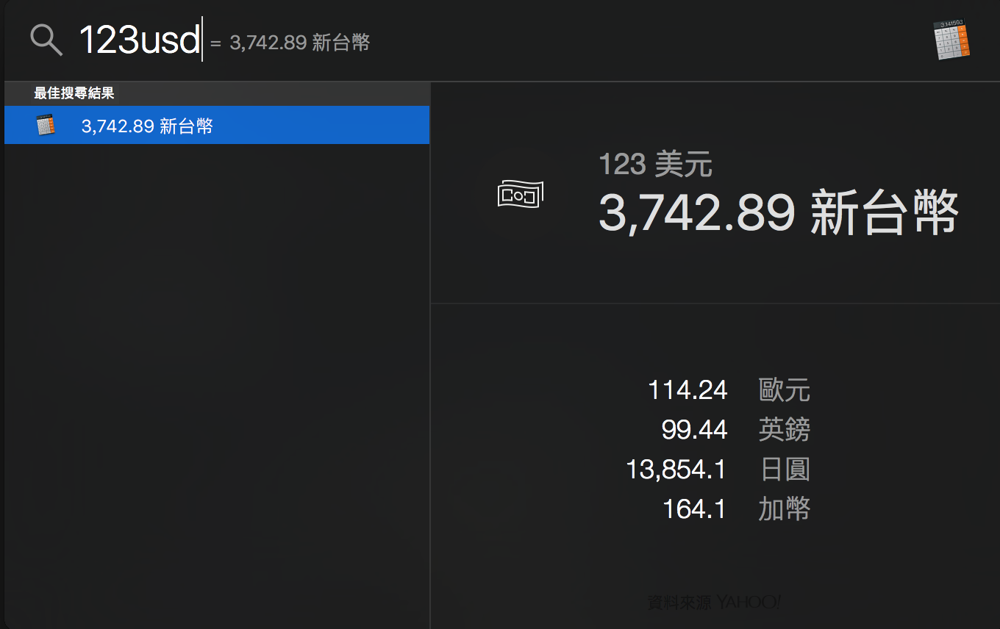
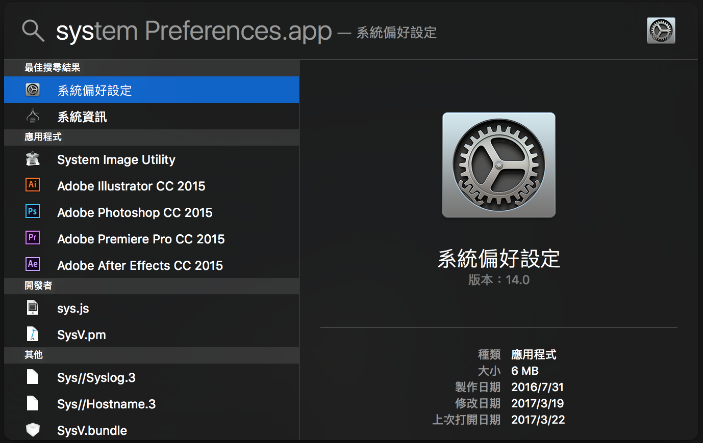
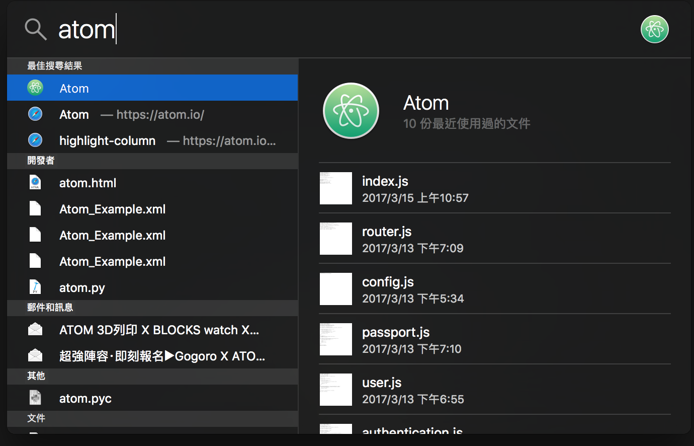
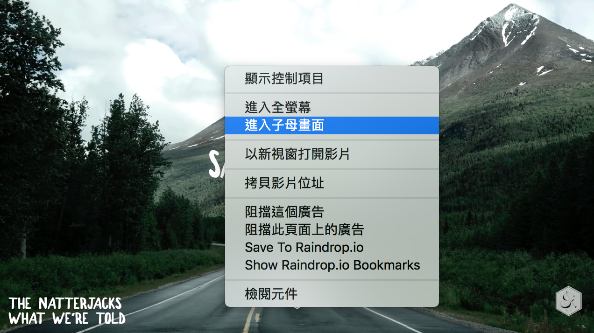

上週與同事討論關於code review的事兼練習口條與台風 結果就變成每週分享
因此昨天就在公司簡易的分享了mac使用教學

在這邊也簡單與大家分享一下
起手式 / Rename
點擊資料夾，直接按 Enter ，就可以命名了
起手式 / Screenshot
command + shift + 3 → 全螢幕截圖
command + shift + 4 → 可選擇區段截圖
command + shift + 4 + 空白 → 可針對視窗截圖（感謝智淵大大補充）
起手式 / Shortcut
在mac上製作捷徑很簡單，就是按下右鍵點選製作替身

Mission Control / hot point
Mission Control / hot point 的位置在於，系統偏好設定 / mission control / (左下角的熱點)
點擊後會出現下列圖示

因為我的Dock在螢幕的下方，因此習慣於在右上角設定為桌面，右下角設定mission control，左下角設定 dashboard
如此一來，當滑鼠滑到螢幕的角落時就會觸發不同功能
- ps dashboard如過要放在熱點使用的話要在mission control頁面的dashboard改為"作為覆疊"

可以在這邊使用便條紙做很快速的紀錄

Spotlight
Spotlight的快捷鍵為 control + 空白鍵，又或著按螢幕右上方的放大鏡
Spotlight可以 做計算

找檔案

開啟程式

是一個挺方便的快捷鍵
Spotlight / .noindex
在於自己有些隱密的檔案不想給spotlight收尋到的話，只要在檔名後面加 .noindex 就可以迴避收尋了
tips / save img
常常在網頁瀏覽圖片時，我們要下載圖片都會按右鍵另存圖片至...等
其實在mac系統提供了一個很棒的方式，只要針對瀏覽器的圖片做拖拉，就可以直接下載了
tips / emoji
在電腦版如何打出emoji符號
按下 control + command + 空白鍵 就可以任意使用emoji符號了歐
tips / little screen
在safari的youtube可以把畫面變成小視窗pin在螢幕上
只要在畫面同一個位置連續按兩次右鍵就可以選擇子母視窗使用小畫面了

這篇只有簡單的帶過如何使用mac
如果像要更了解關於mac軟件方面的話可以參考我這篇
感謝 自我開始使用mac後不停推坑的 老師 朋友 與 同事 的無私分享
參考文章
Hide Files From Spotlight Search With .noindex
↑
comments powered by Disqus